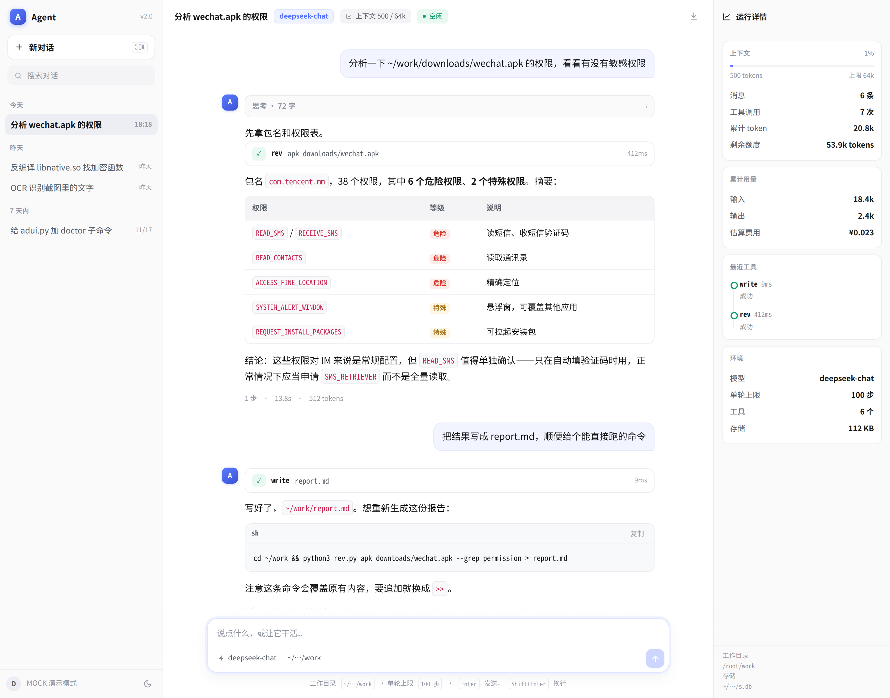
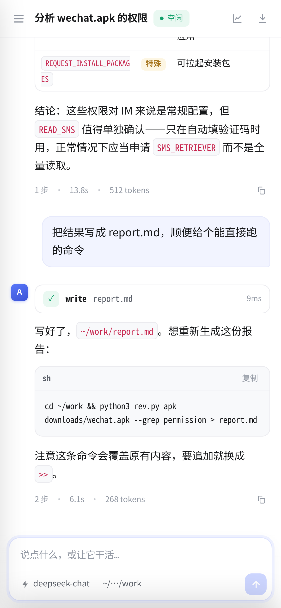
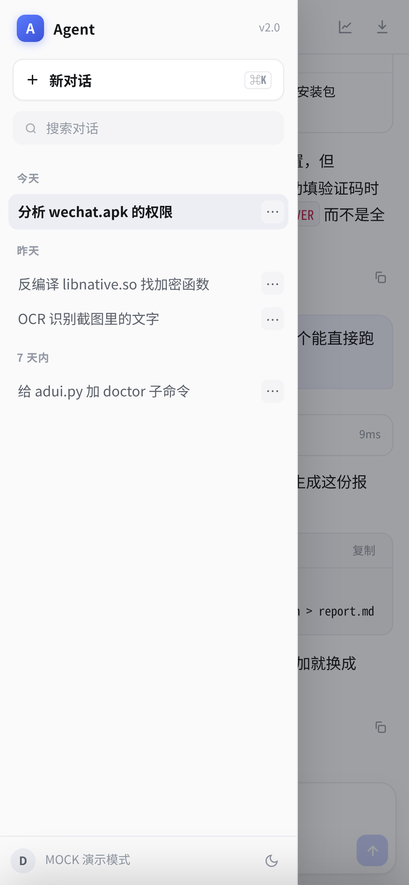
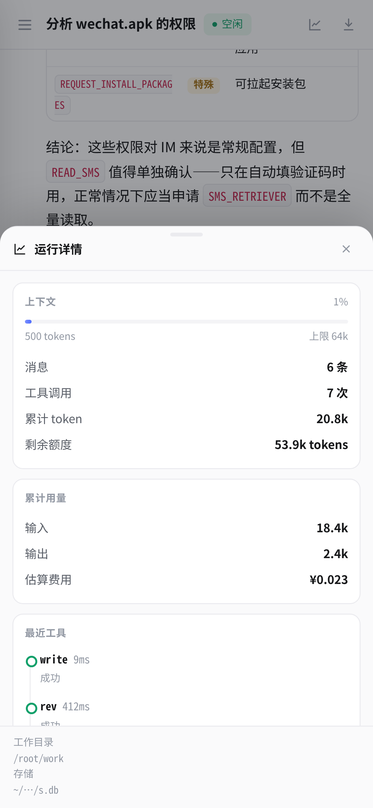

界面按 DeepSeek / ChatGPT 的信息密度重做，会话落到本地 SQLite，运行过程全程可见。 仍然是一个 Termux 里能跑的单进程，零第三方依赖。
针对三个问题：界面粗糙、没有跨会话记忆、运行信息不可见。
目标形态见prototype.html（可点击原型）与shots/下渲染图。
约束：仍然跑在 Termux / 鸿蒙 Linux 虚拟机上，不引入构建链、不装第三方 Python 包，全部用标准库。
现在这三个毛病不是三件事，是同一件事的三个面：webchat.py 把「服务端状态」和「界面状态」都塞进了两个全局变量里。
STATE = {"msgs": [], "events": [], "lock": threading.Lock()}
| 现象 | 真实原因 | 位置 |
|---|---|---|
| 界面丑 | 单栏布局，只有 header + 消息流 + 输入框；没有导航、没有层级、没有信息密度 | HTML 常量，全内联 |
| 没有记忆 | STATE["msgs"] 是进程内存，进程一退就没了；/api/reset 直接置空 |
L76、L431 |
| 只能一个对话 | 全局只有一个 msgs，新对话 = 覆盖旧的 |
L76、L312 |
| 什么都看不到 | 只有 header 一个 sub 文本，done 事件时才闪一下步数和耗时；token 完全没统计 |
L798-801 |
所以改造的核心不是"美化 CSS"，而是把会话变成一等公民：有了 session 这个实体，列表、恢复、搜索、切换、统计全都自然长出来，界面才有东西可展示。


┌──────────┬──────────────────────────────┬──────────┐
│ 会话列表 │ 标题 · 模型 · 上下文 · 状态 │ 运行详情 │
│ 264px ├──────────────────────────────┤ 286px │
│ │ 消息流（最大 748px 居中） │ 上下文 │
│ 新对话 │ ├ 思考块（折叠） │ 进度/token│
│ 搜索 │ ├ 工具卡（可展开输出） │ 本轮统计 │
│ 今天/昨天 │ ├ Markdown / 表格 / 代码块 │ 工具时间线│
│ 更早 │ └ 消息页脚（步数·耗时·token） │ 运行环境 │
│ ├──────────────────────────────┤ │
│ 用户 │ 输入框 + 附件/计划/模型 │ 工作目录 │
└──────────┴──────────────────────────────┴──────────┘
侧栏变抽屉（左滑/点 ☰），右侧详情变底部弹层（点 📈），输入框吸底。


关键取舍：桌面用三栏是为了"信息可见"；手机屏幕装不下，所以把「运行详情」做成按需弹出的底部面板，而不是塞进消息流里。
| 方案 | 问题 |
|---|---|
| JSON 文件整读整写 | 每次追加要重写全文件；1 万条消息时每次 20MB 写入，手机上会卡 |
| 内存 + 退出时落盘 | 进程被 kill / 虚拟机重启 / 断电 → 全丢，正是现在的痛点 |
| SQLite（WAL） | 标准库 sqlite3，Termux 自带；单文件；单条 INSERT < 1ms；支持并发读；崩溃安全 |
路径：~/.local/share/webchat/sessions.db（跟 ~/.config/webchat/env 分开，配置归配置、数据归数据）。
PRAGMA journal_mode = WAL;
PRAGMA synchronous = NORMAL;
PRAGMA busy_timeout = 3000;
PRAGMA foreign_keys = ON;
CREATE TABLE IF NOT EXISTS sessions (
id TEXT PRIMARY KEY, -- 20261119-194802-7f3a
title TEXT NOT NULL, -- 首条消息前 24 字，可改
created_at INTEGER NOT NULL,
updated_at INTEGER NOT NULL,
pinned INTEGER DEFAULT 0,
archived INTEGER DEFAULT 0,
model TEXT,
work TEXT, -- 当时的工作目录，换目录也说得清
steps INTEGER DEFAULT 0, -- 累计工具调用次数
tokens_in INTEGER DEFAULT 0,
tokens_out INTEGER DEFAULT 0
);
CREATE TABLE IF NOT EXISTS messages (
id INTEGER PRIMARY KEY AUTOINCREMENT,
sid TEXT NOT NULL REFERENCES sessions(id) ON DELETE CASCADE,
seq INTEGER NOT NULL, -- 会话内单调递增，断线续传靠它
role TEXT NOT NULL, -- system / user / assistant / tool
content TEXT,
reasoning TEXT, -- 思考内容单独存，不污染 content
tool_calls TEXT, -- JSON 原样
tool_call_id TEXT,
name TEXT,
tokens INTEGER DEFAULT 0,
latency_ms INTEGER DEFAULT 0,
created_at INTEGER NOT NULL,
UNIQUE(sid, seq)
);
CREATE INDEX IF NOT EXISTS idx_msg_sid_seq ON messages(sid, seq);
CREATE INDEX IF NOT EXISTS idx_sess_upd ON sessions(archived, pinned DESC, updated_at DESC);
-- 搜索（FTS5 不可用时降级为 LIKE）
CREATE VIRTUAL TABLE IF NOT EXISTS msg_fts USING fts5(
content, sid UNINDEXED, tokenize='unicode61'
);
三条设计要点：
messages 存 API 原样的消息对象，重启后能 1:1 还原成 msgs 数组直接喂给模型。不要存"渲染后的 HTML"——那就再也恢复不了上下文了。reasoning 单独一列。原因：DeepSeek 的 reasoning_content 不能回传给 API，混在 content 里会导致下一轮 400。seq 单调递增，前端增量拉取用 ?after_seq=120，断线重连不用重拉全量。| 时机 | 动作 |
|---|---|
| 用户发消息 | INSERT user 消息 → sessions.updated_at |
| 流式输出中 | 不落库。delta 只在内存里拼，避免每条 token 一次写盘 |
| 一轮助手回复结束 | INSERT assistant 消息（含 content / reasoning / tool_calls） |
| 每次工具执行完 | INSERT tool 消息 + sessions.steps += 1 |
| 进程退出 / Ctrl+C | atexit 兜底 flush 未落库的当前消息 |
这是最容易踩的坑。如果进程在「assistant 发了 tool_calls，但 tool 结果还没写回」时被杀，数据库里就是：
assistant: {tool_calls: [...]} ← 后面没有对应的 tool 消息
下次启动直接把这串发给 API → 400 Bad Request，会话就永久打不开了。
启动时（或打开会话时）做一次修复：
def repair(sid):
rows = db.execute("SELECT role, tool_calls, tool_call_id FROM messages "
"WHERE sid=? ORDER BY seq DESC LIMIT 1", (sid,)).fetchone()
if not rows:
return
role, tcs, _ = rows
if role == "assistant" and tcs:
for tc in json.loads(tcs):
db.execute("INSERT INTO messages(sid,seq,role,tool_call_id,content,created_at) "
"VALUES(?,?,?,?,?,?)",
(sid, next_seq(sid), "tool", tc["id"],
"（任务被中断，没有拿到结果）", int(time.time())))
前端同时在这一条上标一个"已中断"的灰条，用户点"继续"就能接着跑。
SELECT ... ORDER BY seq → 拼成 msgs → 直接可继续对话，模型"记得"之前聊了什么。messages 超过 60 条或估算 token 超过模型上限 70% 时，把最老的一半交给模型总结成一段 system 摘要，存进 sessions.summary；发送时用「摘要 + 最近 30 条」替代全量。原始消息仍留在库里，只是不参与请求。老版本没有库。加一次性逻辑：启动时若发现 sessions.db 不存在且内存/旧 dump 里有消息，写一条 session + 若干 message，标题取首条 user 消息前 24 字。跑一次就够，之后不再触发。
| 方法 | 路径 | 说明 |
|---|---|---|
| GET | /api/sessions?q=&limit=50 |
会话列表，按 pinned、updated_at 排序；q 走 FTS |
| POST | /api/sessions |
新建，返回 {id,title} |
| PATCH | /api/sessions/{id} |
改标题 / 置顶 / 归档 |
| DELETE | /api/sessions/{id} |
删除（级联删消息） |
| GET | /api/sessions/{id}/messages?after_seq=0 |
拉消息，支持增量 |
| POST | /api/sessions/{id}/chat |
发消息，返回 SSE |
| POST | /api/sessions/{id}/stop |
中止当前任务 |
| GET | /api/sessions/{id}/stats |
上下文占用、步数、token、工具时间线 |
| GET | /api/health |
版本、模型、工作目录、库大小 |
user {v} 用户消息回显
think {v} 思考增量
delta {v} 正文增量
tool {id,name,args} 工具开始
tool_end {id,out,ms,ok} 工具结束（新增 ok）
usage {in,out,total} 本轮 token（新增）
title {v} 自动标题（新增）
done {steps,turns,ms,hit_limit,stopped}
error {v}
usage 的来源：DeepSeek 兼容 OpenAI 的流式用量，请求体加
"stream_options": {"include_usage": True}
最后一个 chunk 会带 usage: {prompt_tokens, completion_tokens}。拿不到时用估算兜底：
def est_tokens(s):
cjk = sum(1 for ch in s if '\u4e00' <= ch <= '\u9fff')
return int(cjk * 1.05 + (len(s) - cjk) / 3.6)
现在的问题：任务在后台跑，前端一刷新就白屏，只能等它跑完再点历史。
做法：每个会话一个事件环形缓冲 + 自增 seq。
class Bus:
def __init__(self):
self.seq = 0
self.buf = collections.deque(maxlen=3000)
self.subs = []
self.lock = threading.Lock()
def pub(self, ev):
with self.lock:
self.seq += 1
ev["seq"] = self.seq
self.buf.append(ev)
subs = list(self.subs)
for q in subs:
q.put(ev)
GET /api/sessions/{id}/stream?last_seq=1200，服务端先把 buf 里 seq > 1200 的重放，再挂上订阅。id: {seq}，浏览器 EventSource 自动带 Last-Event-ID。stats 判断 running，是则自动接流。这一步做完，"手机上锁屏再打开，任务还在跑"就是自然结果。
sid 同时只允许一个 run，重复请求返回 409，前端提示"当前会话正在运行"。sid 可并发（ThreadingHTTPServer 天然支持），但共享工作目录，写文件可能打架——方案里约定 agent 单任务串行，跨会话并发只读。stop：置 threading.Event，agent 循环每步 if stop.is_set(): break，收尾发 done{stopped:true}，并把已产生的部分回复落库。现在 webchat.py 已经 39KB，再把新界面塞进去会破 80KB，改一行要在 HTML 字符串里翻半天。
webchat.py # 服务 + agent 循环（约 25KB）
static/app.html # 结构（约 6KB）
static/app.css # 样式（约 12KB）
static/app.js # 逻辑（约 18KB）
webchat.py 里加一个静态文件服务（读不到就用内置兜底，保证单文件也能跑）。update.sh 的 FILES 加三行即可，它本来就是逐文件比对下载。
如果坚持单文件：把 HTML 改成 render_index()，用 %s 注入 CSS/JS 三段常量，至少代码分区清楚。
不做花哨设计，靠克制取胜：
| 项 | 值 |
|---|---|
| 主色 | #4d6bfe（只用于：发送键、选中态、链接、运行中脉冲点） |
| 背景 | 主区 #fff，侧栏 #fafafb，卡片 #fff + 1px 边框 |
| 圆角 | 气泡 14px（右下角 4px 制造方向感）、卡片 11px、按钮 9px |
| 字号 | 正文 15/1.72，元信息 11，工具名 12 等宽 |
| 阴影 | 只有输入框有：0 1px 2px rgba(16,24,40,.04), 0 8px 24px rgba(16,24,40,.05) |
| 助手消息 | 不要气泡，直接文本贴底（ChatGPT/Claude 风格，长文更好读） |
| 用户消息 | 浅蓝气泡 #f2f4ff + #e6e9fb 边，右对齐 |
| 深色 | prefers-color-scheme 自动切换，color-scheme: light dark 一并声明 |
思考块：默认折叠，只显示「已思考 2.4s」；运行中自动展开，结束后自动收起（可手动固定展开）。
工具卡：一行显示 工具名 + 参数摘要 + 耗时 + 状态。
- 运行中：左侧转圈，整卡半透明
- 成功：绿色 ✓，点击展开输出
- 失败：红色 ✕，默认自动展开（错误必须一眼看到）
- 同类连续调用合并成一组（如连续 5 次 read_file 折叠成「读取 5 个文件」）
消息页脚：4 步 · 18.6s · 2,180 tokens，hover 出现「复制 / 重新生成 / 分支」。移动端常驻显示。
输入框：Enter 发送、Shift+Enter 换行（现在的实现有 isComposing 判断，保留，中文输入法不会误发）；上方一行常驻提示：工作目录、单轮步数上限、快捷键。
现在的 flush() 每帧 cur.innerHTML = md(curRaw)——长回复时每帧重排整段 Markdown，手机上会掉帧。
改成：
1. 流式期间只 appendChild(document.createTextNode(chunk))，纯文本，零重排；
2. 收到 done 或遇到 ``` 代码块边界时才渲染一次 Markdown；
3. 历史消息超过 60 条时只渲染最近 60 条 + 顶部「加载更早」按钮。
现有 md() 缺三样：代码块语言标签、复制按钮、嵌套列表。
代码块外面包一层 .codewrap：
<div class="codewrap">
<div class="codehead"><span class="lg">sh</span>
<button data-code="...">复制</button></div>
<pre><code>...</code></pre>
</div>
复制用 navigator.clipboard.writeText，失败降级 document.execCommand('copy')（Termux 的 WebView 有时不给 clipboard 权限）。
用户抱怨"什么信息都看不到"，本质是不知道这次任务花了多少。三个层级：
| 层级 | 展示位置 | 内容 |
|---|---|---|
| 单条回复 | 消息页脚 | 这次回复几步、多久、多少 token |
| 单轮任务 | 顶部 chip + 右侧面板 | 累计步数、总耗时、输入/输出 token |
| 整个会话 | 右侧「上下文」卡 | 已用 / 上限、百分比进度条、按当前速度还能聊多少轮 |
估算值要标"≈"，真实值来自 usage 事件；两者偏差超过 20% 时用真实值校准系数并写回配置。
| 阶段 | 内容 | 工时 | 可独立验收 |
|---|---|---|---|
| P0 | SQLite 存储 + 会话 CRUD API + 侧栏列表 + 顶部信息条 + token 统计 | 4-6h | 重启进程，历史还在；能切会话 |
| P1 | 三栏布局 + 工具卡/思考块/消息页脚 + 右侧详情 + 深色 + 移动端抽屉 | 1d | 界面对齐原型图 |
| P2 | 断线重连 + stop + 自动标题 + 搜索 + 导出 md | 4-6h | 跑任务时刷新页面，流继续 |
| P3 | 上下文压缩、重新生成/分支、多模型切换 | 1d | 长会话不爆上下文 |
P0 做完就已经解决"没有记忆"，P1 解决"丑和看不见"，两者可并行（一个人改后端、一个人改前端，接口按第四节对齐）。
webchat.py 本来就没有鉴权，现在等于把"你在这台机器上干过的所有事"也存下来了。--host 0.0.0.0 时同网段任何人可读。建议 P1 一并加一个简单 token：启动时生成随机串写进 ~/.config/webchat/env，前端 URL 带 ?k=，或校验 Cookie；不带则 401。WAL + busy_timeout，否则两个浏览器标签同时写会 database is locked。CREATE VIRTUAL TABLE 失败就 catch，搜索降级成 LIKE '%q%'（数据量小，够用）。--mock 模式要跟着改：现在 mock 只造两轮假数据，新前端要能展示工具卡/思考块/统计，mock 得造完整事件序列，否则没 key 时看不到界面效果。seq 做成全局自增。必须是会话内自增，否则切换会话后 after_seq 全乱。